안녕하세요 여러분! 효빈시 덕질 전도사입니다 💙
며칠 전 우리 효빈시 안천구 당가동에서 아주 끔찍한(?) 테러 사건이 있었죠.
소위 '바지본'이라는 극우 단체 할배들이 지명 바꾸라고 시위하다가 빡쳐서 탕 쿠쿠 한정판 등신대의 목을 부러뜨려버린 대형 사고를 쳤습니다 🤬
근데 이거 알고 보니까 걍 동네 굿즈가 아니라 효빈시-상하이시-시부야구 3개 도시가 합작해서 만든 외교 상징물이었다는 거 다들 아시죠? ㅋㅋㅋ
무식한 할배들이 동네 기물 파손한 줄 알았는데 알고 보니 대사관 차를 들이박은 격이었음 ㅋㅋㅋㅋ
이 사건이 터지고 나서 처음엔 나라 망신이라고 생각했는데...
우리 박효빈 시장님의 미친 하드캐리(새벽 4시 현장 방문 + 영혼까지 털어버리는 합법적 금융치료)가 전 세계로 번역되어 퍼지면서 전 세계 덕후들이 갓효빈을 찬양하고 있습니다.
일본, 중국은 물론이고 미국, 유럽, 동남아 반응까지 싹 다 긁어왔습니다! 스크롤 주의! 👇👇
🇯🇵 일본 반응: "효빈 시장, 가치코이(찐팬)였냐 www"
처음엔 마토메 블로그 같은 데에 "한국 우익이 일본 애니 테러함"으로 올라가서 혐한 터질 뻔했는데, 반나절 만에 "시장님이 철야 끝내고 새벽 4시에 오열(?)" 썰이 퍼지면서 분위기 180도 반전 ㅋㅋㅋ
 ラブライバー太郎 @L_Taro_123
ラブライバー太郎 @L_Taro_123
韓国のヒョビン市長、ガチ恋勢じゃんｗｗｗ 深夜4時に自分で行ってパネル撫でるとかオタクの鑑すぎるｗｗｗ 尊敬するわ。
[번역] 한국의 효빈 시장, 가치코이(찐팬) 세력이잖아 ㅋㅋㅋ 심야 4시에 직접 가서 패널 쓰다듬는 거 오타쿠의 귀감 그 자체 ㅋㅋㅋ 존경스럽네.
 かすみん同好会 @Kasumin_Lover
かすみん同好会 @Kasumin_Lover
右翼団体がパネル壊したって聞いてキレそうだったけど、市長が「慰謝料まで魂かき集めて請求しろ」って法的措置取ったの聞いて草生えた。韓国のオタク政治、レベル高すぎ。
[번역] 우익 단체가 패널 부쉈다고 해서 빡칠 뻔했는데, 시장이 "위자료까지 영혼을 긁어모아 청구해라"라고 법적 조치 취했다는 거 듣고 빵 터짐(草). 한국의 오타쿠 정치, 레벨 너무 높잖아.
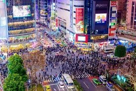
渋谷のハチ公 @Shibuya_Hachi
渋谷区から送った可可ちゃんを…許せねぇ！でもヒョビン市長の対応早すぎて惚れた。今度ヒョビン市に聖地巡礼行くわ。
[번역] 시부야구에서 보낸 쿠쿠 쨩을... 용서 못 해! 하지만 효빈 시장의 대응이 너무 빨라서 반해버렸다. 다음에 효빈시로 성지순례 간다.
 弁護士志望 @Law_Student_JP
弁護士志望 @Law_Student_JP
損害賠償100倍とかヤバすぎｗｗ 右翼のジジイたち、これ自己破産不可避でしょ。オタクを敵に回すとこうなるっていう最高の事例。
[번역] 손해배상 100배라니 미쳤네 ㅋㅋㅋ 우익 영감탱이들, 이거 자기파산 불가피하잖아. 오타쿠를 적으로 돌리면 이렇게 된다는 최고의 사례.
기타 5ch / 트위터 반응 요약:
- "단순 기물 파손이 아니라 3국 외교 자산 훼손으로 엮어서 조례 빈틈 파고든 거 실화냐? 합법적 깡패네 ((((；ﾟДﾟ))))"
- "가해자 영감탱이들, 저거 배상 판결 나면 연금 다 털리고 야반도주해야 할 듯 www"
- "
조병진이라는 시의원도 태클 걸다가 논리로 개털렸다며? 저 동네는 시장이 킹엠페러네."
🇨🇳 중국 반응: "따거(大哥) 박효빈 만세!"
탕 쿠쿠의 고향답게 처음엔 웨이보에서 분노가 폭발했는데, 시장님의 참교육 썰이 빌리빌리(Bilibili) 핫클립으로 올라가면서 완전 따거(형님) 찬양 모드로 바뀌었습니다 ㅋㅋㅋ
 星空可可 @Weibo_KekeFan
星空可可 @Weibo_KekeFan
原来市长也是可可的真爱粉啊！凌晨四点一个人开车去看可可，还要让那些坏人赔得倾家荡产。朴孝彬大哥，以后你就是我们在韩国的兄弟！
[번역] 알고 보니 시장도 커커의 찐팬이었잖아! 새벽 4시에 혼자 운전해서 커커 보러 가고, 저 나쁜 놈들 집안을 거덜 내게(파산하게) 만들겠다니. 박효빈 따거(大哥), 앞으로 당신은 한국에 있는 우리의 형제다!
 上海星人 @Shanghai_Otaku
上海星人 @Shanghai_Otaku
那些破坏面板的韩国老头子，简直就是反动分子。用资本主义的铁拳教训他们，爽！
[번역] 패널을 부순 한국 늙은이들, 그야말로 반동분자(反动分子)다. 자본주의의 철퇴(금융치료)로 혼내주다니, 속이 뻥 뚫리네!
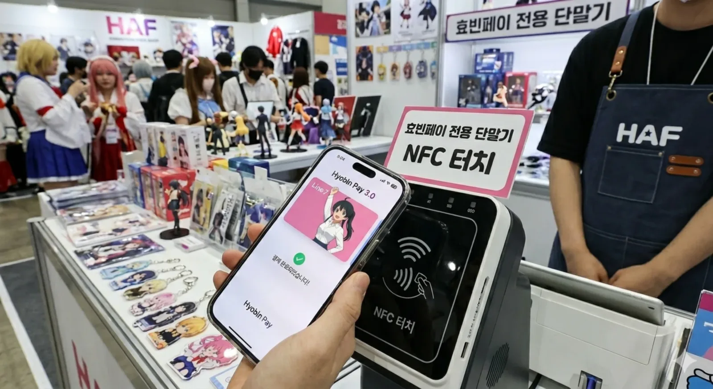
上海的星 @Shanghai_Star
敢动我们上海的女儿？幸好朴市长是个狠人，不然我们连夜坐船去韩国算账了！
[번역] 감히 우리 상하이의 딸을 건드려? 박 시장이 독한 사람이라 다행이지, 아니었으면 우리 밤배 타고 한국 가서 결판냈을 거다!
 吃瓜群众 @Melon_Eater_99
吃瓜群众 @Melon_Eater_99
破坏外交资产的老头被资本主义铁拳砸碎，这剧情连小说都不敢这么写哈哈哈！
[번역] 외교 자산을 부순 노인네가 자본주의의 철퇴에 박살나다니, 이 스토리는 소설도 이렇게 못 쓴다 ㅋㅋㅋ!
기타 빌리빌리 / 웨이보 반응 요약:
- "저런 무식한 늙은이들(
곽두환,
조병진)이 시장의 앞길을 막으려 하다니, 홍위병처럼 싹 쓸어버려야 한다 ㅋㅋㅋ"
- "중국인이 자본주의의 매운맛(100배 소송)을 열렬히 응원하는 아이러니 ㅋㅋㅋㅋ"
🇺🇸 미국 반응: "기가채드(GigaChad) 효빈 시장"
자본주의 종주국 형님들답게 레딧(Reddit)과 X(트위터)에서 '금융치료'에 극찬을 아끼지 않는 중입니다. 미아 테일러 오시들도 등판했네요 ㅋㅋㅋ
 Burger&Baseball @MiaOshi_NY
Burger&Baseball @MiaOshi_NY
Based Mayor. Hyobin Mayor went full GigaChad. Sued them into oblivion for breaking an anime cutout. That's how we do it!
[번역] 씹상남자(Based) 시장. 효빈 시장이 완전 기가채드(GigaChad) 모드가 됐네. 애니 패널 부쉈다고 파산할 때까지 고소해버림. 이게 우리 방식이지!
AnimeLover_USA @Weeaboo_John
Don't mess with Love Livers. We will literally bankrupt you. Huge W for Hyobin City.
[번역] 럽라이버들을 건들지 마라. 문자 그대로 파산시켜 버릴 테니. 효빈시의 엄청난 승리(W)다.
NY_Yankees_Mia @Mia_Fanboy
"Shit..." That was almost an international crisis. Mayor Park hit a grand slam with that lawsuit. Absolute cinema.
[번역] "Shit..." 하마터면 국제 위기일 뻔했네. 박 시장이 저 소송으로 만루 홈런을 쳤어. 완전 영화(Absolute cinema)다.
WallStreetOtaku @Stonks_Anime
Liquidating far-right boomers through civil lawsuits for breaking an anime standee is the most American thing ever. God bless Hyobin.
[번역] 극우 꼰대들을 애니 등신대 부쉈다는 이유로 민사 소송으로 청산(Liquidating)해버리는 건 역사상 가장 미국적인 짓이다. 효빈시에 신의 축복을.
기타 레딧(Reddit) 반응 요약:
- "미아 테일러가 이 소식을 들었다면 'Shit, that's crazy'라고 하면서 버거 한 입 베어물었을 듯 ㅋㅋㅋ"
- "뉴욕이었으면 벌써 저 할배들 골목길에서 갱단한테 털렸을 텐데, 법대로 영혼까지 터는 게 더 잔인하고 맘에 든다."
🇭🇰 홍콩 반응: "란쥬가 좋아할 자비 없는 행정력"
LIHKG(홍콩의 레딧)에서도 화제입니다. 특히 쇼우 란쥬 오시들이 박효빈 시장의 가차 없는 '자본력(소송)'에 크게 감명받았다고 하네요 ㅋㅋㅋ
HK_Lanzhu @Queendom_HK
If someone broke Lanzhu's panel, I'd buy the city and fire them. Hyobin Mayor's ruthlessness is exactly like Lanzhu. Perfect.
[번역] 누가 란쥬 패널 부쉈으면 내가 그 도시를 통째로 사서 놈들을 해고했을 거다. 효빈 시장의 자비 없음은 완전 란쥬 스타일. 완벽해.
Dimsum_Otaku @Dimsum_11
The financial therapy is such a boss move. No mercy for the weak old men.
[번역] '금융 치료(민사소송)'는 진짜 보스다운 수법이네. 나약한 노인네들에게 자비란 없다.
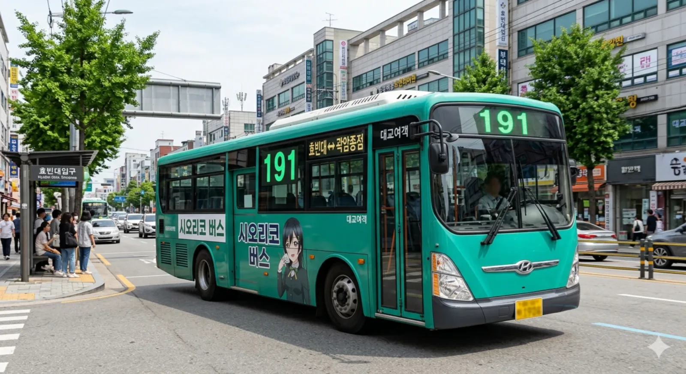
Lanzhu_Money @Billionaire_Club
如果蘭珠知道這件事，她一定會買下那個極右組織的總部然後改建成可可的周邊店。朴市長幹得好！
[번역] 만약 란쥬가 이 사실을 알았다면, 그 극우 조직 본부를 통째로 사들여서 커커의 굿즈샵으로 개조했을 거다. 박 시장 잘했어!
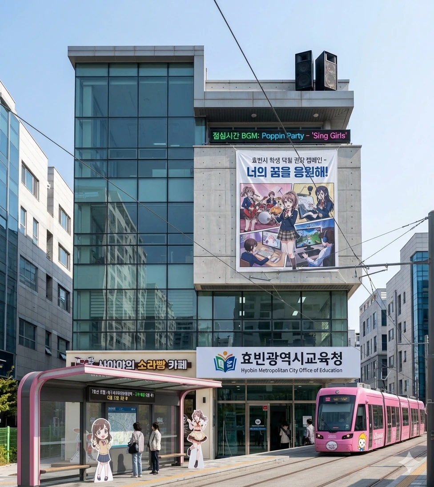
HK_Neon @NeonCity_HK
零容忍政策！這就是我們需要的管治效率。那些老傢伙現在應該在發抖吧哈哈。
[번역] 무관용 원칙! 이게 바로 우리에게 필요한 행정 효율이지. 저 늙은이들 지금 벌벌 떨고 있겠네 ㅋㅋ.
기타 LIHKG 반응 요약:
- "홍콩에도 저런 오타쿠 시장이 필요하다. 4시 새벽 드라이브라니 시장이 미친 거 아님? (칭찬)"
- "바지본? 저 노인네들 란쥬가 봤으면 당장 광둥어로 쌍욕 박으면서 경호원 불렀음 ㅋㅋㅋ"
🇦🇹🇷🇺 오스트리아 & 러시아: "완벽한 걸작", "하라쇼!"
유럽 쪽 반응도 재미있습니다. 클래식의 나라 오스트리아(빈 마르가레테)와 불곰국 러시아(아야세 에리) 팬덤의 반응입니다.
 Wien_Classic @Wien_Austria
Wien_Classic @Wien_Austria
The 100x lawsuit is a masterpiece. Just like a Mozart symphony. True passion (Leidenschaft) driving at 4 AM for Keke.
[번역] (오스트리아) 100배 소송은 완전 걸작이다. 마치 모차르트 교향곡 같군. 커커를 위해 새벽 4시에 운전하다니, 진정한 열정(Leidenschaft)이다.
Edelweiss_Wien @Wien_Melody
Solche Barbaren verstehen die wahre Kunst nicht. Der Bürgermeister von Hyobin ist ein echter Dirigent der Gerechtigkeit!
[번역] (오스트리아) 저런 야만인들은 진정한 예술을 이해하지 못한다. 효빈 시장은 정의의 진정한 지휘자다!
Mozart_Otaku @Mozart_Kugeln
100-fache Klage? Das ist Musik in meinen Ohren. Schickt sie in den finanziellen Ruin, elegant und gnadenlos.
[번역] (오스트리아) 100배 소송? 내 귀에는 완벽한 음악처럼 들리는군. 그들을 우아하고 자비 없이 재정적 파멸로 보내버려라.
 Elichika_RU @Harasho_Russia
Elichika_RU @Harasho_Russia
Harasho! In Russia, bear eats you. In Hyobin, Mayor bankrupts you. The gulag (financial ruin) awaits them!
[번역] (러시아) 하라쇼! 러시아에선 곰이 당신을 먹지만, 효빈에선 시장이 널 파산시킨다. 굴라그(금융 파산)가 그들을 기다린다!
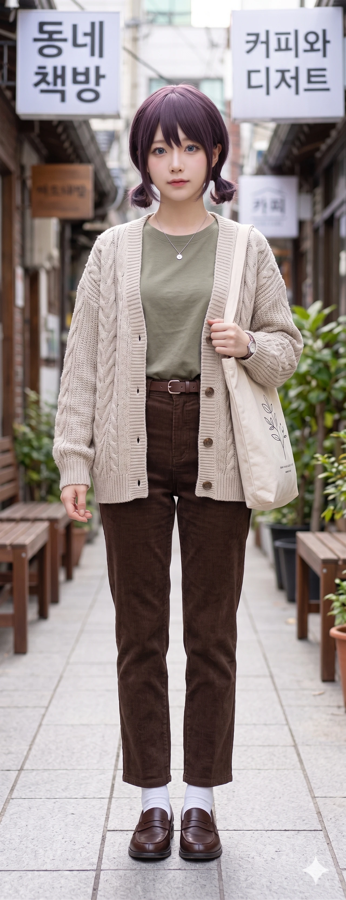
Eli_Ballet @Harasho_Vodka
Мэр Пак действовал холодно, как сибирская зима. Уничтожить врагов юридически — это высший пилотаж. Хорошо! (Khorosho!)
[번역] (러시아) 박 시장은 시베리아의 겨울처럼 차갑게 행동했다. 적들을 법적으로 파멸시키는 것, 이것이야말로 최고의 기술이다. 하라쇼! (Khorosho!)
 Moscow_Borscht @Soviet_Anime
Moscow_Borscht @Soviet_Anime
Этим старикам повезло, что они не в России. Но гражданский иск на 100-кратную сумму — это их личный ГУЛАГ.
[번역] (러시아) 저 노인네들은 러시아에 있지 않은 걸 다행으로 여겨야 해. 하지만 100배 민사 소송이라니, 저건 그들만의 개인 굴라그(수용소)나 다름없지.
기타 오스트리아/러시아 반응 요약:
- "오스트리아에서 마르가레테 패널 부쉈으면 예술 모독으로 종신형이다."
- "에리치카도 울고 갈 완벽한 효빈 학생회장(시장)의 일 처리 솜씨 ㅋㅋㅋ 저 할배들을 툰드라 대신 법정으로 보내다니 자비롭네."
🇵🇭 필리핀 반응: "우리 혼혈 형님(Kuya) 건드리지 마라!"
이번 사태에서 가장 뜨겁게 불타오른 국가 중 하나가 바로 필리핀입니다!
필리핀은 동남아시아에서 일본 애니메이션 팬덤이 가장 거대하고 열정적인 국가이기도 하지만, 무엇보다 우리 효빈시에 필리핀-한국 다문화 교민들이 엄청나게 많이 살고 있거든요.
게다가 결정적으로... 박효빈 시장님의 어머님이 필리핀 분이시라는 사실! (한-필 혼혈)
이 사실을 잘 알고 있는 필리핀 오타쿠들과 현지 네티즌들은 박 시장님을 친근하게 '우리 형님(Kuya)'이라고 부르며 그야말로 전폭적인 쉴드와 지지를 쏟아내고 있습니다 ㅋㅋㅋㅋ
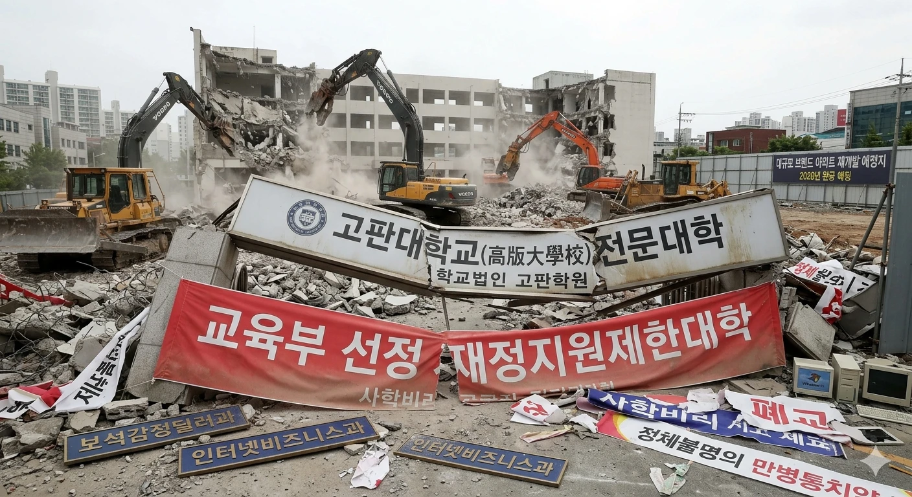
Pino_Otaku @Manila_LoveLive
Putangina, don't mess with Keke and our Kuya Hyobin! Half-Filipino blood boiling at 4 AM to protect his waifu. 100x lawsuit is pure Pinoy fighting spirit 💀
[번역] ㅅㅂ(Putangina), 커커랑 우리 쿠야(형님) 효빈 건드리지 마라! 자기 최애캐를 지키려고 새벽 4시에 끓어오르는 필리핀 혼혈의 피. 100배 소송은 순수한 피노이(필리핀인)의 투지다 💀
 Hyobin_Tambayan @FilKor_Hyobin
Hyobin_Tambayan @FilKor_Hyobin
Living in Hyobin City. Those far-right boomers messed with the wrong city. Mayor Park's mom is from PH, we don't take disrespect lightly here. Mabuhay Mayor Park!
[번역] 현재 효빈시 거주 중. 저 극우 꼰대들은 잘못된 도시를 건드렸음. 박 시장님 어머님이 필리핀 출신이라, 우린 여기서 무례한 짓을 가만두지 않는다. 마부하이(만세) 박 시장님!
HaloHalo_Lover @Sweet_Pino
Tangina, if they did that in Manila we'd throw them into Manila Bay! Sucking them dry with civil lawsuits is even better. Absolute cinema.
[번역] 미친(Tangina), 마닐라에서 저랬으면 마닐라 만에 던져버렸을 거다! 민사 소송으로 골수를 빨아먹는 게 훨씬 낫네. 완전 영화다 영화.
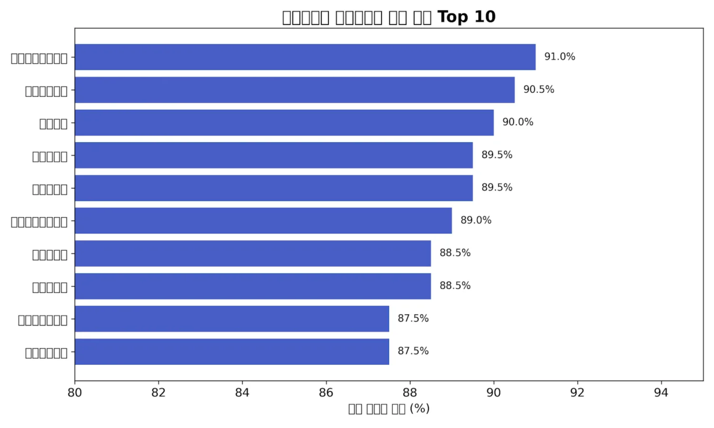
Jollibee_Otaku @Chicken_Joy_99
We need a Mayor Park in every city. Imagine protecting a waifu standee with government lawyers. Kuya Park is cooking 🔥
[번역] 모든 도시에 박 시장 같은 분이 필요하다. 정부 변호사들을 써서 와이푸(최애캐) 등신대를 지킨다고 상상해 봐. 우리 쿠야(형님) 박이 제대로 요리하네 🔥
기타 필리핀 반응 요약:
- "필리핀 피가 흐르는 시장님의 100배 청구 매운맛 ㅋㅋㅋ 졸리비 스파이시 치킨보다 맵다!"
- "효빈시에 사는 필리핀 혼혈 친구한테 들었는데, 저 할배들 지금 동네에서도 왕따 당하고 있다며? 쌤통이다 ㅋㅋㅋ"
- "이건 완전 애니메이션 플롯이잖아. 꼰대 빌런 vs 기가채드 혼혈 시장. 효빈시 내 다음 여행 목표다."
🇮🇹🇨🇭 유럽 (이탈리아 & 스위스) 반응
오하라 마리의 이탈리아와 엠마 베르데의 스위스 오타쿠들도 자비 없는 효빈시의 대처에 감탄을 금치 못하고 있습니다 ㄷㄷ
 Shiny_Roma @Mari_Italy
Shiny_Roma @Mari_Italy
Che schifo to break it, but the lawsuit is Shiny! Driving at 4 AM... That's true Amore.
[번역] (이탈리아) 부순 건 역겹지만(Che schifo), 소송은 완전 샤이니! 하네. 새벽 4시 운전... 저건 찐 사랑(Amore)이다.
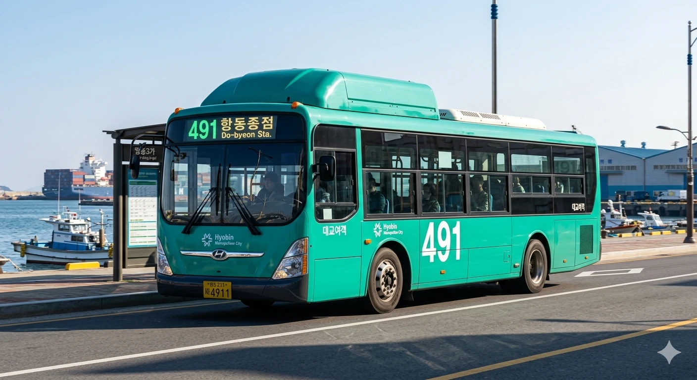
Shiny_Pasta @Mari_Estate
It’s Joke! Volevano distruggere Keke? Il sindaco li ha trattati come farebbe la famiglia Ohara. Magnifico!
[번역] (이탈리아) It's Joke! 커커를 부수려고 했다고? 시장이 오하라 가문이 할 법한 방식으로 그들을 대우해 줬네. 마니피코(훌륭해)!
 Alps_Heidi @Emma_Swiss
Alps_Heidi @Emma_Swiss
Neutrality is good, but sometimes you must sue them into the ground. Respect from the Alps.
[번역] (스위스) 중립도 좋지만, 가끔은 지옥 끝까지 고소해야 할 때도 있지. 알프스에서 존경을 보낸다.
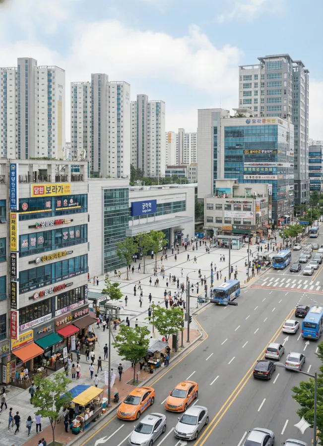
Swiss_Watch @TickTock_Otaku
Präzise wie eine Schweizer Uhr. Die rechtliche Zerstörung dieser Vandalen ist absolut befriedigend.
[번역] (스위스) 스위스 시계처럼 정확하군. 저 반달리스트들을 법적으로 파괴하는 과정은 완전히 만족스럽다.
기타 이탈리아/스위스 반응 요약:
- (이탈리아) "마피아 대신 시청 법무팀을 푸는 시장의 합법적 복수극. 마마 미아!"
- (이탈리아) "새벽 4시에 현장에 가는 건 진정한 헌신이지. 저 시장은 황금 같은 마음씨와 적들에게 자비 없는 강철의 지갑을 가졌어."
- (스위스) "자연을 훼손하는 자와 덕질을 훼손하는 자에게 알프스의 자비란 없다 ㅋㅋㅋ"
- (스위스) "이렇게 끔찍한 짓에는 가장 중립적인 스위스인들조차 분노할 거다. 시장은 마치 눈사태처럼 반응했네."
🇰🇷 한국 타 지역: "존나 부럽다 진짜"
마지막으로 효빈시 외 국내 타 지역 커뮤니티(디시, 펨코, 더쿠 등) 반응입니다. 다들 부러워 죽으려고 하네요 ㅋㅋㅋ
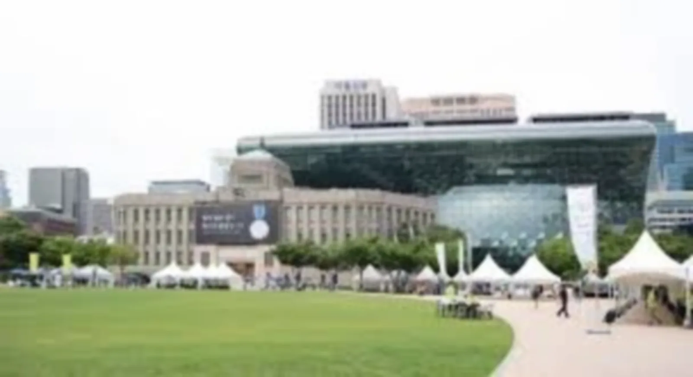
서울토박이 @Seoul_Citizen
효빈시는 걍 네오-도쿄네 ㅋㅋㅋ 시장 한 명이 도시 멱살 잡고 하드캐리함. 무료법률구조 조례로 엮어서 소송 거는 거 진짜 뇌지컬 미쳤다.
[서울 - DC 인사이드]
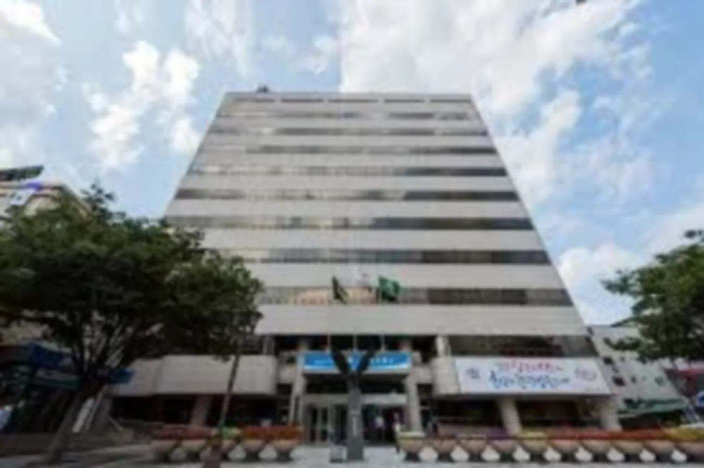
대구더위사냥 @Daegu_Apple
와 대구 사는데 저 할배들 짓거리 보니까 같은 보수로서 낯뜨겁노 ㅋㅋㅋ 시장이 조례 끌어와서 100배 청구하는 솜씨 보니까 효빈시 행정력 개부럽다.
[대구 - 에펨코리아]
마계인천 @Incheon_Bro
인천에서 효빈으로 출장 자주 가는데, 효빈시는 ㄹㅇ 시장 하나 잘 뽑아서 도시가 네오-도쿄가 됐네 ㅋㅋㅋ 우리 동네 시장은 뭐 하냐 진짜...
[인천 - 인스티즈]
국내 타 지역 반응 요약:
- (부산) "우리가 붓싼 아이가! 하면서 가오 부렸는데 효빈시 100배 금융치료 행정력 앞에서는 명함도 못 내밀겠다 ㄷㄷ"
- (천주) "천주시민인데... 솔직히 존나 부럽다. 우리 시장은 맨날 헛소리만 하고 꼰대짓 하는데 효빈시는 기가채드 시장이 애니 캐릭터 지켜줌 ㅠㅠ"
- (
탄성군) "우리 동네로 도망 온 전과자 곽두환 보면서 맨날 효빈시 찬양 중 ㅋㅋㅋ 탄성군도 락의 성지로 효빈시처럼 키워달라!"
✨ 결론: 전화위복 오졌다
결과적으로 이 사건 덕분에 우리 효빈시는 전 세계 럽라이버 및 덕후들 사이에서 '시장이 직접 쉴드 쳐주는 전설의 성지'로 완벽하게 각인되었습니다.
지금 당가동 가면 그 테이프 덕지덕지 붙은 등신대가 오히려 전투의 훈장 취급받으면서 글로벌 외국인 관광객들 필수 인증샷 코스가 됐다고 해요 ㅋㅋㅋ
아무튼 무지성 폭력에는 합법적인 금융 치료가 답이라는 걸 제대로 보여준 갓효빈 시장님 만세입니다.
오늘 저녁은 파란색 1호선 타고 당가동 가서 탕 쿠쿠 보면서 초코바나나 하나 사 먹어야겠네요! 부시도!! 🤘
#효빈시
#박효빈시장
#탕쿠쿠
#금융치료
#해외반응
#사이다

댓글 24
와 전 세계 오타쿠들 반응 다 긁어오셨네 ㅋㅋㅋㅋ 러시아에서 굴라그 드립 치는 거랑 필리핀 쌍욕 박는 거 ㅈㄴ 웃기네 ㅋㅋㅋㅋ 박효빈 따거 충성충성!!
이런 천박한 블로그 글이 버젓이 돌아다니다니 통탄할 노릇입니다! 외국인들의 조롱을 칭찬으로 착각하는 좌파 오타쿠들의 망상에 불과합니다!! 당장 글을 내리십시오!!
진짜 법무팀 조례 활용해서 소송 들어간 거 행정법 교과서에 실려야 됨 ㅋㅋㅋ '사유재산 + 외교자산' 프레임 짜서 보수당 의원 입 꾹 다물게 만든 게 ㄹㅇ 신의 한 수.
중국몽에 찌든 매국노들!! 나의 2.1% 정예 병력이 일본 대사관과 중국 대사관에 폭탄을 투하할 것이다!! 박효빈은 사퇴하라!!
요즘 당가동 진짜 외국인 관광객 개많아요. 특히 일본, 중국 말뿐만 아니라 동남아 서양인들 엄청 옴 ㅋㅋㅋ 다들 그 테이프 감은 등신대 앞에서 합장(?)하고 사진 찍고 감 ㅋㅋㅋㅋ 상권 부활 폼 미쳤음.
이부역의 무사도도 모자라 당가동의 중국몽까지!! 효빈시가 오타쿠들의 놀이터로 전락하는 것을 볼 수 없다!! 나 곽두환이 다시 나서서 모두 불도저로 밀어버리겠다!!
와 ㅋㅋㅋ 제 블로그에 빌런들 3대장(조병진, 윤재훈, 곽두환) 다 출석했네요 ㅋㅋㅋㅋ 영광입니다 ^^ 님들 덕분에 제 블로그 조회수 떡상 중 ㅋㅋㅋㅋ 계속 놀다 가세요 ㅋㅋㅋ
당가동도 탕 쿠쿠도 상하이도 모두 가짜다!! 효빈시의 진실은 2006년 3표 차로 억울하게 패배한 나 지총민에게 있다!! 나의 0.8% 지지자들이 이 블로그를 점거할 것이다!!